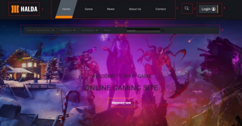

A turn-based monster-collection RPG built with Unity and C#, featuring event-driven architecture and
ScriptableObject-driven data.
UnityC#Turn-based

E-Commerce with Personalized Recommendations
A full-stack e-commerce application with a custom TypeScript collaborative filtering model that
recommends products to each user.
AngularExpress.jsMongoDB
Work Experience
Software Engineer – SAP Technical Consultant
FPT Software · Full-time
Contributed to a 47-member project migrating a large-scale enterprise system, gaining experience with
complex system architecture and cross-team collaboration.
Designed and implemented integrations across platforms using interfaces such as SAP PI/PO and IDoc,
developing a strong understanding of data flows. These skills also apply to game networking and save
systems.
Built and extended UI/UX components, testing for responsiveness and accessibility.
Developed business logic and enhancements based on requirements, and debugged issues in production.
Collaborated with functional teams to turn business requirements into technical solutions.
Angular Developer
FPT Software · Full-time
Developed and maintained web applications with Angular.
Built responsive UI/UX using routing, navigation, and component architecture.
Integrated RESTful APIs into the frontend; tested and debugged features while working in an Agile
team.
Skills
GAME DEVUnityC#Aseprite
WEB / BACKENDTypeScriptAngularNode.jsExpress.jsMongoDBSQL
TOOLSGitDockerPostman
OTHERSAP ABAP
Education
University of Transport and Communications 2
Bachelor of Information Technology
Graduated 03/2024
Contact
Open to game development opportunities. Feel free to reach out anytime.